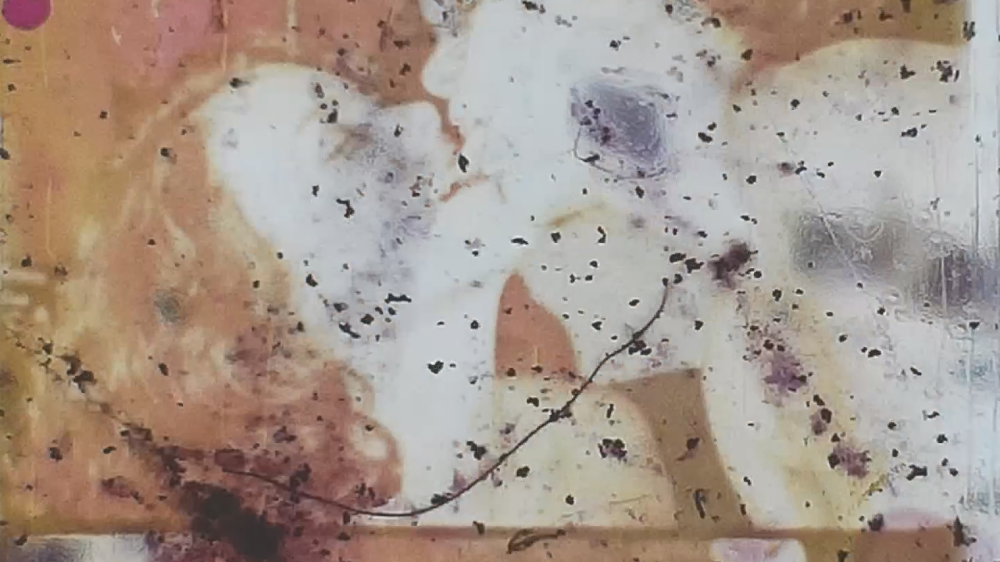
آثار
Traces
by Chantal Partamian
Beirut 1980: Amid the rubble of a torn building, a reel of film. An unlikely unraveling of queer bodies taking shape and form, while the war-torn city around and its spectacle of toxic masculinity glitches and disintegrates.
8min., 2023, 16mm, 8mm, Found Footage, Lebanon/Canada
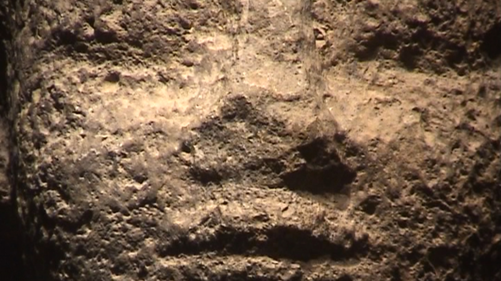
نحو َ الشمس
Towards the Sun
by Nour Ouayda
An audio guide with fading authority and growing interpretative autonomy takes us around the National Museum in Beirut.
17min., 2019, Mini DV, Lebanon
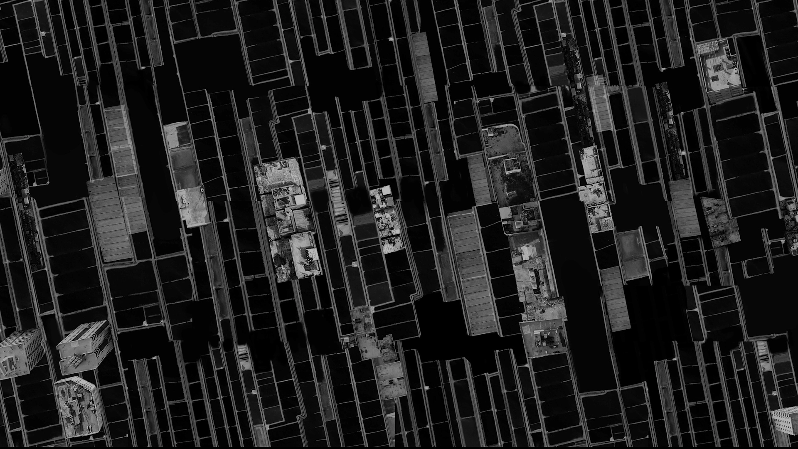
The Right to See
by Mahmoud Alhaj
After years of using Google Maps as his only window to the world, Mahmoud discovers that these images of Palestine are outdated. Twenty-five times less detailed than anywhere else, they erase essential elements, like the apartheid wall.
6min., 2021, HD, Palestine
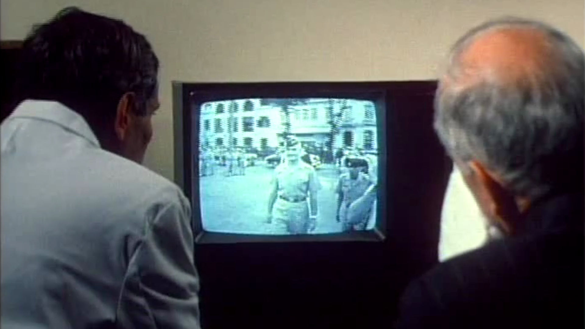
What Farocki Taught
by Jill Godmilow
A shot for shot remake of German filmmaker Harun Farocki’s film Inextinguishable Fire exploring division of labour in the development of Napalm B by Dow Chemical during the Vietnam War.
29min., 1998, 16mm, USA
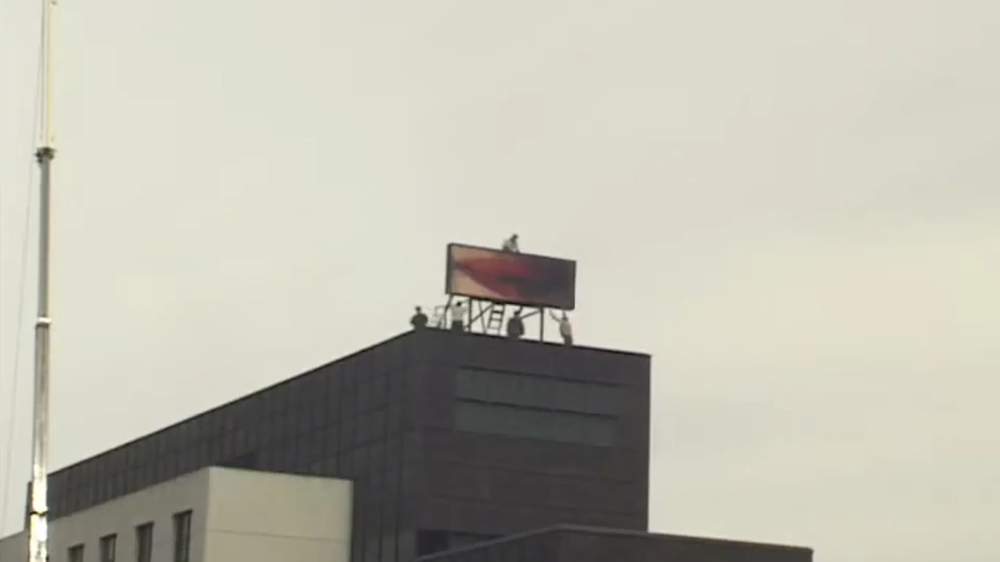
Lips
by Karina Garcia Casanova & Olivier Alary
As the Musée d’art contemporain in Montreal installs an artwork on its roof, the filmmaker, living across the street from the museum, calls to point out a small mistake.
3min., 2008, DV, Canada
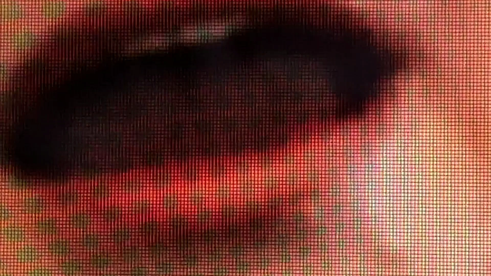
Il faudra en revenir
There Must Be a Way Back
by Katia Gosselin
“No reason to fear wild animals—‘wild’ means ‘free, untamed’,” said François Sarano, the oceanographer who spent years observing and recording sperm whales. Does humanity’s misfortune stem from distancing itself from nature? Are we doomed to self-destruction?
9min., 2021, Canada
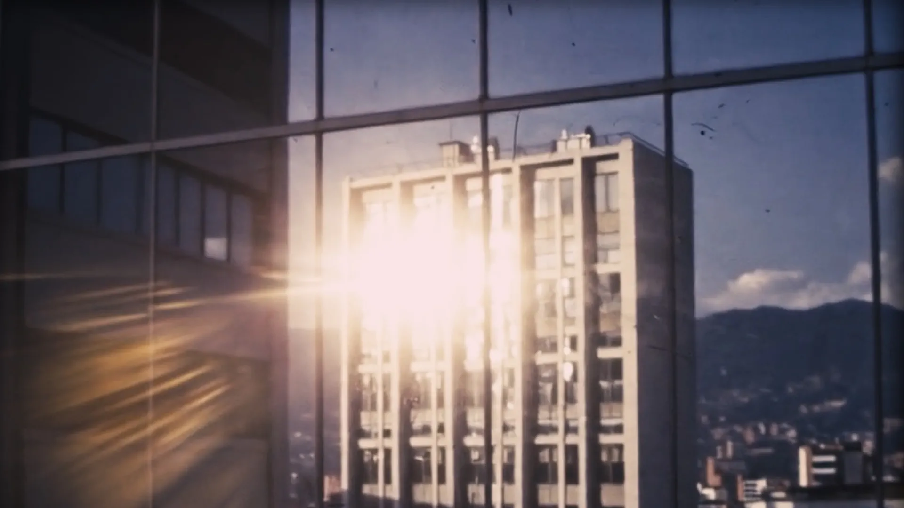
09/05/1982
by Camilo Restrepo & Jorge Caballero
A deteriorated film, shot in 1982 in a Latin American country, presents a series of everyday images, among which a few stand out that testify to the violent events that took place on May 9 of that year. Interspersed between images, a man's voice presents the official version of the events. Beneath its apparent banality, the film raises suspicion that what really happened was covered up.
10min., 2025, Spain/Mexico
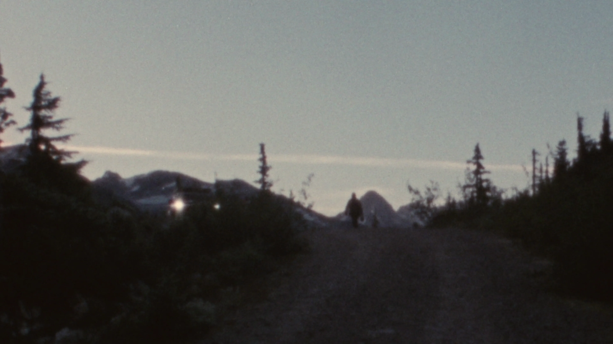
La salle d’attente
by OK Pedersen*
In this speculative documentary, present-day Nation borders have collapsed into vast privatized housing complexes. Epitomizing advanced capitalism’s financialization and incarceration, the citizens of “Condo World” live in a so-called dream where it’s illegal and punishable to leave. Out on a virtual vacation, a citizen of Condo World loses touch with her sister, or possibly, herself.
12min., 2024, Canada
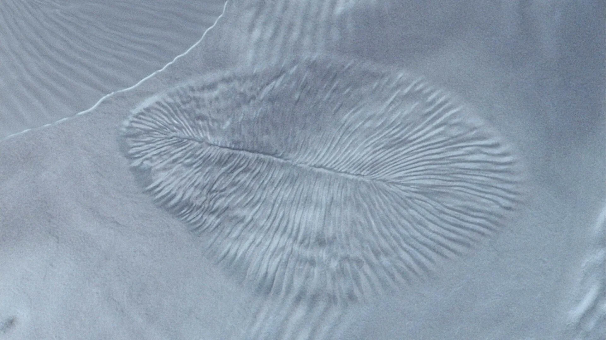
dickinsonia. les archives sensibles
by Charline Dally & Gabrielle Harnois-Blouin
The dickinsonia is a 550-million-year-old sea organism whose soft body has left very few fossils. The rare traces of its existence have left the scientific community doubtful. Using video glitch, the film burrows into our hazy memories which, like dickinsonia, leave but vague impressions.
11min., 2023, Canada
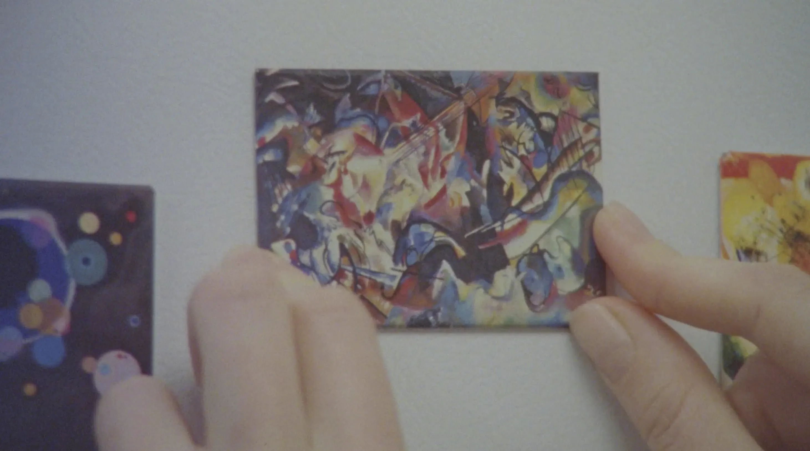
Point and Line to Plane
by Sofia Bohdanowicz
Devastated after the death of a friend, a young woman attempts to find meaning from this intense loss as she discovers signs in her daily life and through encounters with the art of Hilma af Klint and Wassily Kandinsky. As the woman peers deeper into the invisible, the resurrecting potential of perception helps illuminate the power of how we choose to look and, moreover, how we see.
18min., 2020, Canada/Iceland/Russia/USA
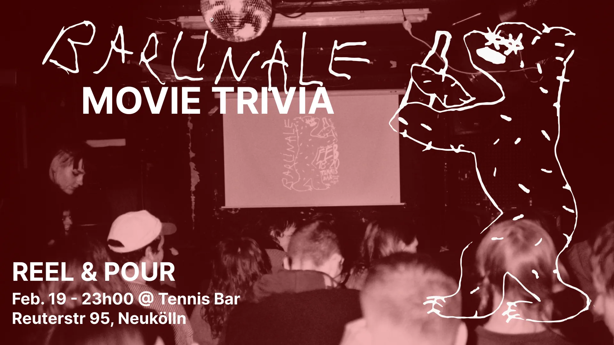
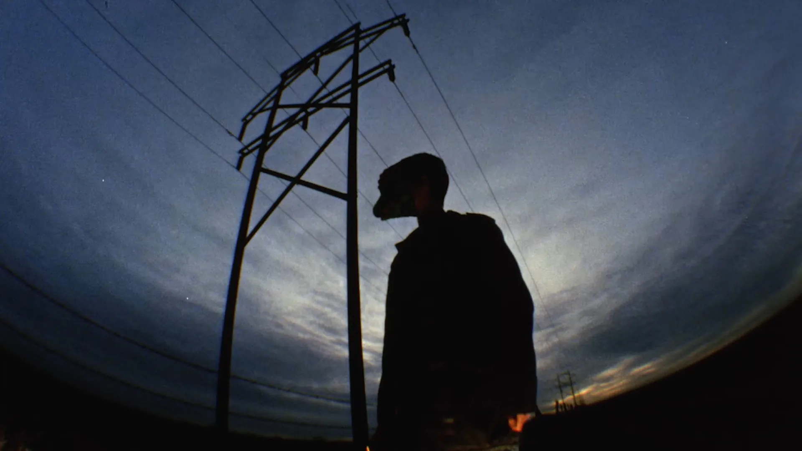
Roswell
by Bill Brown
A starboy gets lost in space and an intrepid traveler goes looking for answers and a cheap motel room.
19min., 1994, 16mm, USA
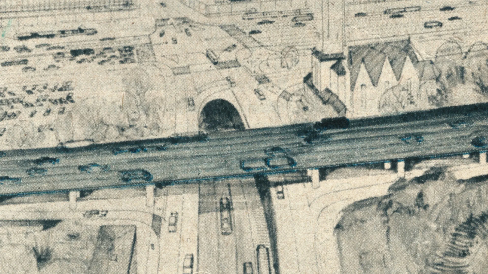
Sous le soleil exactement
by Noa Blanche Beschorner
Inspired by the inhabitants, streets, and her German language exercies, artifacts from the filmmakers return trip to her native city of Berlin, take the form of a city symphony.
14min., 2024, 16mm, Germany/Canada
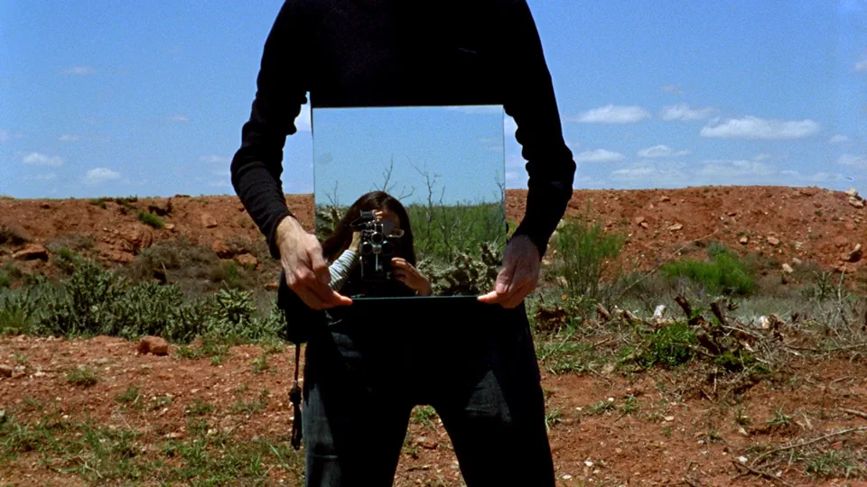
Amarillo Ramp
by Sabine Gruffat & Bill Brown
Two filmmakers explore Robert Smithson’s sculpture and land artist “Amarillo Ramp” and place of the artists death, where his plane crashed whilst conducting an arial survey of the site.
24min., 2017, 16mm/HD, USA
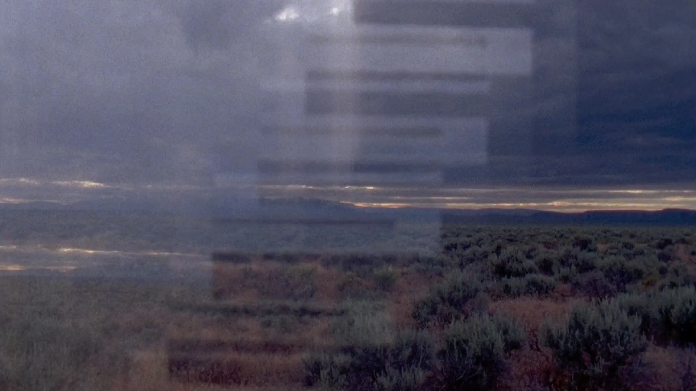
Principle Meridian
by Nathaniel Cummings-Lambert
Exploring the landscape of Harney and Lake county of Southeastern Oregon, the filmmaker reconfigures the invisible divisions of State, Federal and Tribal lands into a collaged landscape.
3min., 2017, 16mm, USA
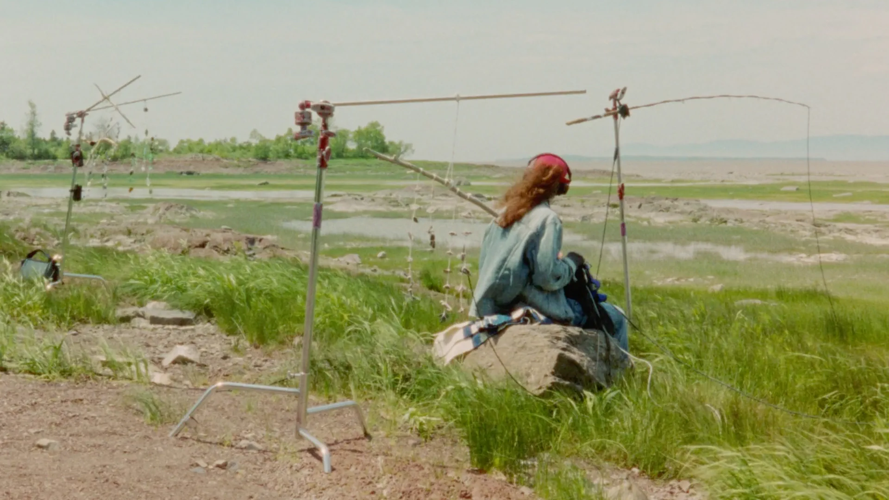
Une marégraphie suspendue
A Suspended Tide
by Félix Caraballo
Strange auditory anomalies lead a sound artist through landscapes of the Bas-Saint-Laurent that blur the line between reality and imagination.
13min., 2025, 16mm, Canada
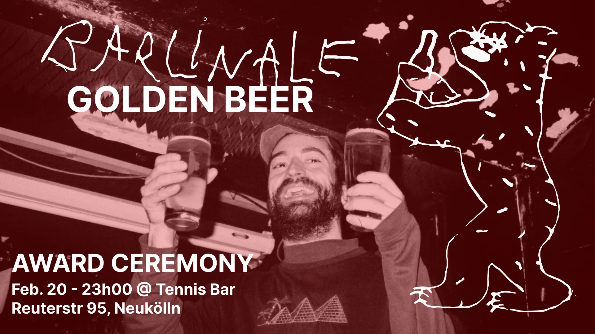